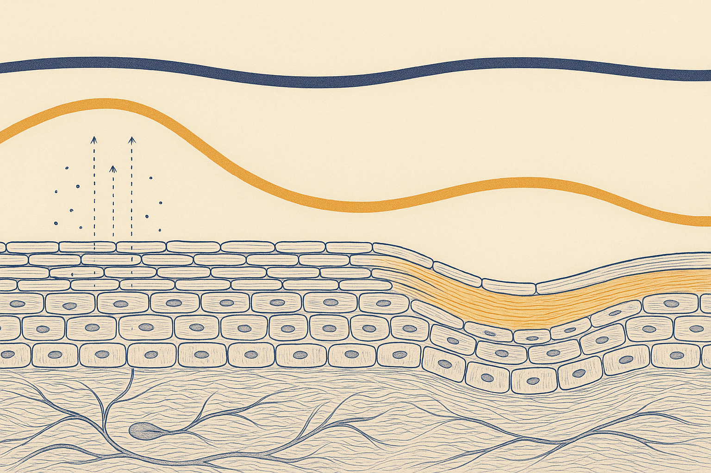
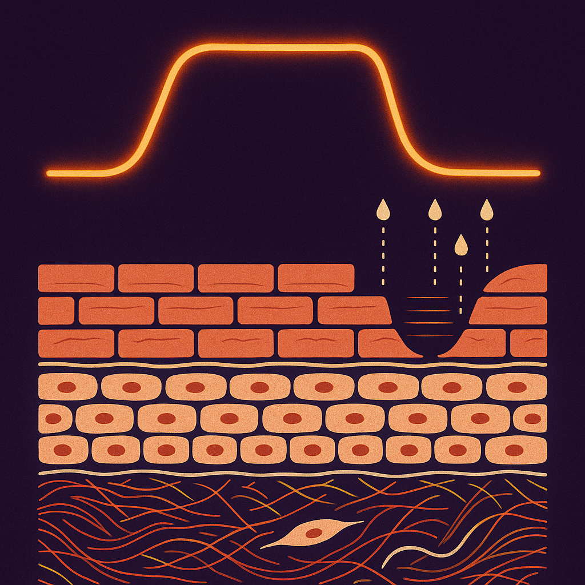
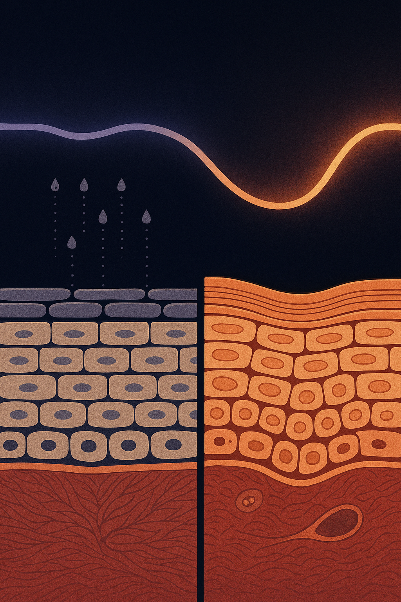

Review below. Reply approve to publish the Facebook post, or tell me edits.

Your skin did not suddenly get sensitive. Your fortnight did.
Skin behaves for months. Then comes one flat-out stretch: a deadline, a sick kid, a run of five-hour sleeps. Suddenly it is dull, tight, reactive to a moisturiser it has liked since autumn, and slow to settle after anything.
The first suspect is almost always the newest bottle on the shelf. Sometimes that is right. More often the variable that changed was not a product at all, and it will not be found in a routine audit. It is the hormone curve running underneath the whole thing.
Cortisol has a bad reputation it only half deserves. It is a normal, necessary hormone that moves on a daily curve: it climbs sharply in the first hour after you wake (the cortisol awakening response), tapers across the day, and bottoms out around midnight.
Skin needs that shape. Skin cells carry their own peripheral clock, and cortisol is one of the signals that sets it. The morning peak runs the day-defence side of the schedule: barrier vigilance, immune readiness, energy. The night-time trough is what clears the way for the repair side.
So the problem is not cortisol. The problem is a curve that never comes down: a flattened, late-running rhythm where evening looks a bit too much like morning.
Here is the mechanism, named and then translated.
Your barrier is often described as brick and mortar. The bricks are corneocytes, the flattened cells at the surface. The mortar is a lipid matrix, mostly ceramides, cholesterol and free fatty acids, packed into the spaces between them. That mortar is what holds water in and holds irritants out.
Sustained cortisol suppresses the production of those lipids. Less mortar in the wall means more water lost through it, and a wall that is easier to get through from the outside. That is the whole reason stressed skin feels different rather than just looking different. Skin that used to shrug off a hot shower, a windy walk or a change in weather starts stinging at all three.
The measurable end of it is the interesting part. Researchers can test this directly: compromise the barrier under controlled conditions, then track how fast it seals. Across barrier-recovery studies using tape stripping, people under sustained psychological stress (exam periods, caregiving, marital strain) recover their barrier measurably more slowly than the same people in calmer stretches. Same skin, same products, different repair speed.
Two other loops ride along with it. In breakout-prone skin, stress signalling nudges sebum production and inflammatory pathways at once, which is why a stressful month can look like a hormonal one. And stress adds mechanical load quietly: the absent-minded scratch, the chin resting on a hand, the jaw held clenched for hours. None of that helps a barrier that is already repairing slowly.
Ranked roughly by how well supported each one is, and kept to things you can do this week.
One thing not on this list: no skincare product lowers cortisol. Nothing topical resets a circadian curve, and anyone claiming otherwise is selling ahead of the evidence.
Eight hours in bed is not the same as eight hours of repair.
Overnight is a genuinely different state for skin. Transepidermal water loss peaks in the small hours, and repair activity is at its highest across the same window. That is the trade: skin runs leakier at night in exchange for doing its rebuilding then.
A cortisol curve that runs late costs you that window twice. First, elevated evening cortisol works against the lipid production the repair phase depends on. Second, it makes sleep lighter and shorter, so the window ends early. You can log the hours and still miss most of the benefit.
Worth separating this from the mechanical side of sleep, which is a different article entirely. Pillow position, fabric and creasing are physics. This is chemistry, and it is the one that shows up as reactivity rather than as lines.
For one week, note two numbers each morning: roughly what time you fell asleep, and skin reactivity from 1 to 5 (stinging, flushing, tightness after cleansing). Do not change any products while you do it.
If reactivity tracks the late nights more reliably than it tracks what you applied, you have found your variable. That is a more useful result than any new serum.
Which variable actually changed for you this fortnight?
The one thing on that list nothing enforces is the still ten minutes. That is the honest reason a light session fits this theme at all: it books ten minutes where you cannot scroll, cannot fold washing and cannot answer anything. Ten minutes, seven light colours. It is a cosmetic device, not medicine, and nobody should tell you a mask lowers your cortisol. Judge it against everything above, and if you want a closer look, the mask and its full spec are here.

Your skin did not suddenly become sensitive. Your fortnight did.
Cortisol runs on a daily curve. It peaks in the hour after you wake, and bottoms out near midnight, and your skin is built around that rhythm. When the curve never comes down, the skin makes less of the lipid mortar that holds the barrier bricks together. Water leaves faster. Things that never bothered you (a scarf, a new cleanser, wind on the drive home) suddenly do.
The part that actually matters: sleep quality, not hours. Overnight is peak repair time, so a shallow, wired seven hours costs you the window twice, once for the stress and once for the repair you did not get.
Three things that move the needle and cost nothing.
1. Daylight on your eyes within an hour of waking.
2. A caffeine cut-off you actually keep.
3. Ten to twenty minutes a day that are genuinely non-productive.
That last one is the hard one.
Nothing enforces that ten minutes, which is the one thing a mask session does well. It is why ours is built around ten minutes, $129 at introductory pricing: https://redermis.com.au/products/red-light-therapy-face-neck-mask. Cosmetic device, not medicine.
Daylight, caffeine cut-off, or the ten minutes: which one do you actually keep?
**CTA:** Daylight, caffeine cut-off, or the ten minutes: which one do you actually keep?
**Hashtags:** #skinbarrier #skinhealth #cortisol #skinlongevity

Your skin did not suddenly get sensitive. Your fortnight did.
Cortisol runs on a daily curve. High after waking, low near midnight.
Skin is built around that curve.
Hold it high for weeks and skin makes less of the lipid mortar that seals the barrier.
That mortar is the lipid packed between the flattened surface cells, so when it thins, water leaves faster and irritants get in easier.
Less mortar. More water lost. More reactive skin.
That is why a stressful month can leave skin stinging at products it was fine with a season ago.
Sleep quality matters more than sleep hours here. Overnight is peak repair, and a wired, shallow sleep costs you the window twice: less repair, and a cortisol curve that never properly comes down.
Three free levers, all of them boring, all of them real.
Daylight on the eyes within an hour of waking. It anchors the curve at the top so it can fall properly at night.
A caffeine cut-off you actually keep. Early afternoon for most people.
Ten to twenty minutes a day that are genuinely non-productive. Not a podcast. Not a scroll. Still.
The last one is the one everybody skips, because nothing enforces it.
That is the whole reason a mask session is built around ten minutes where you cannot scroll. The enforced ten minutes is the part that makes it stick.
It is a cosmetic device, not medicine, and it makes no claim on your hormones.
The rest of it is free.
Which lever do you actually skip?
**CTA:** Link in bio for a closer look at the face and neck mask, $129 introductory pricing.
**Hashtags:** #skinbarrier #skinbarrierrepair #cortisol #skincarescience #stressandskin #sleepandskin #skincareaustralia
**Title:** Stressed skin: the cortisol curve behind a leaky barrier
**Description:** Dull, tight, reacting to a moisturiser it was fine with a season ago? The variable was probably not a product. Cortisol should peak in the morning and fall by night. When that curve flattens, skin makes less of the lipid mortar between the surface cells, so water leaves faster. One free lever: daylight on your eyes within an hour of waking. Nobody should tell you a mask lowers your cortisol, and red light therapy at home is a cosmetic device, not medicine. Save this for a stressful week.
**CTA:** If you want a closer look, the face and neck mask is $129 at introductory pricing: https://redermis.com.au/products/red-light-therapy-face-neck-mask
**Hashtags:** #SkinBarrier #Cortisol #SkincareScience #StressAndSkin #SkinLongevity
**Image:** reuses the Instagram image (instagram.png). No separate Pinterest image is generated.